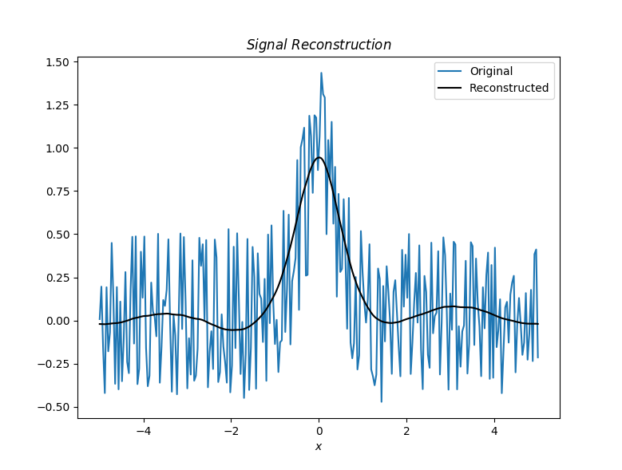

One algorithm to denoise signals developed by Peihao Li and Taous-Meriem Laleg-Kirati that makes use of SCSA is the curvature constrain semi-classical signal analysis (C-SCSA for short) which basically deals with the reconstructed signal curvature as a way to measure its "wigliness" and then use it a a cost function \(J\) to find the value of h which leads to the minumum of \(J\), where J is given by
$$J=||y_{\delta} - y_h||_2^2 + \mu \int|k(t)|dt$$
and the curvature is defined as $$k(t) = \frac{|y_h''(t)|}{(1+y_h'(t)^2)^{\frac32}}$$
Now translated to the discrete domain and an equispaced grid of \(N\) points where $$a = t_1 < t_2 < \quad \cdots \quad < t_{N-1} < t_N = b$$
Then one can express the minimization problem for J as $$\bar{J} = \sum_{i=1}^N [y_{\delta}(t_1) - y_h(t_i)]^2 + \mu\sum_{i=1}^N k(t_i)$$
